Instalación y puesta en marcha de Obsidian
Vamos a nuestro buscador favorito y buscamos "Obsidian"
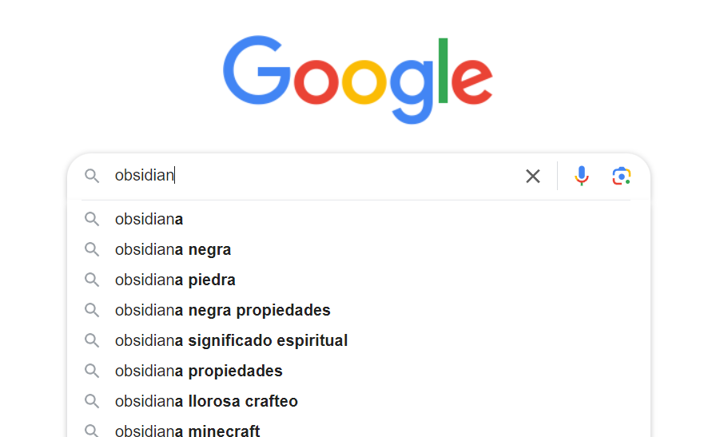
Pulsamos en "Download"

Elegimos la opción según nuestro sistema operativo.
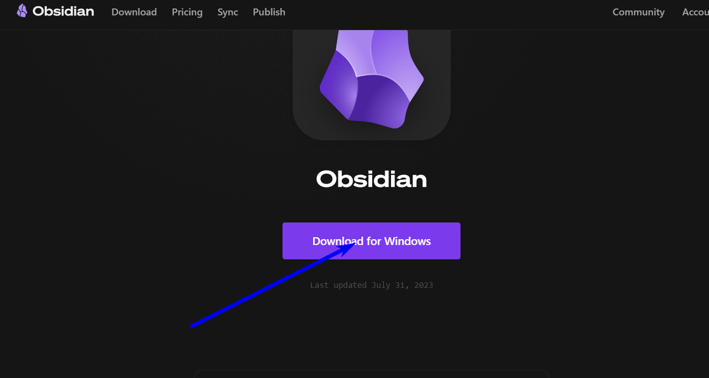
Lo descargamos en el escritorio.
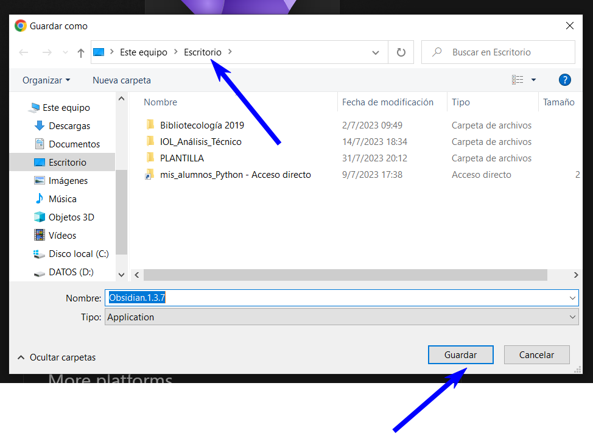
Doble clic en el icono.
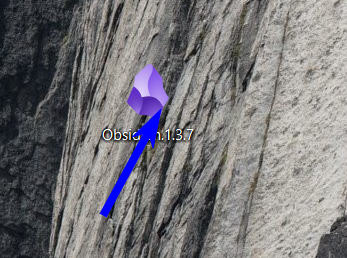
Se nos abre esta ventana.
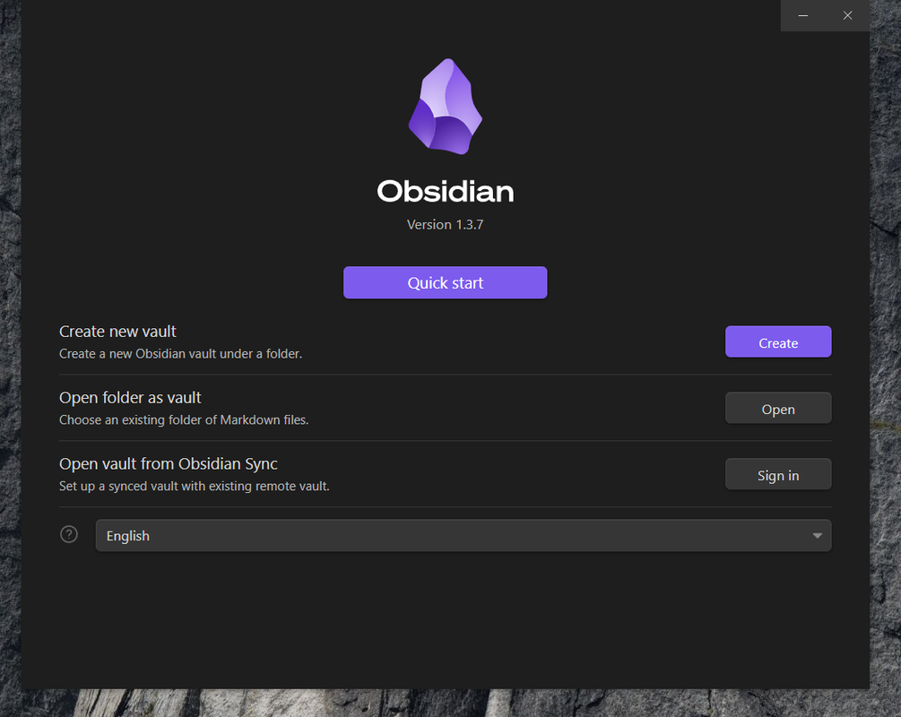
Cambiamos el idioma a Español.
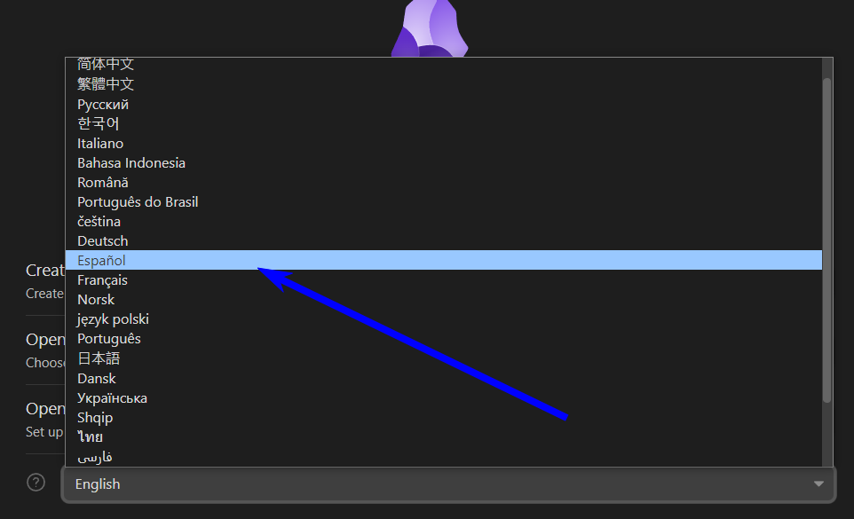
Pulsamos en "Crear"
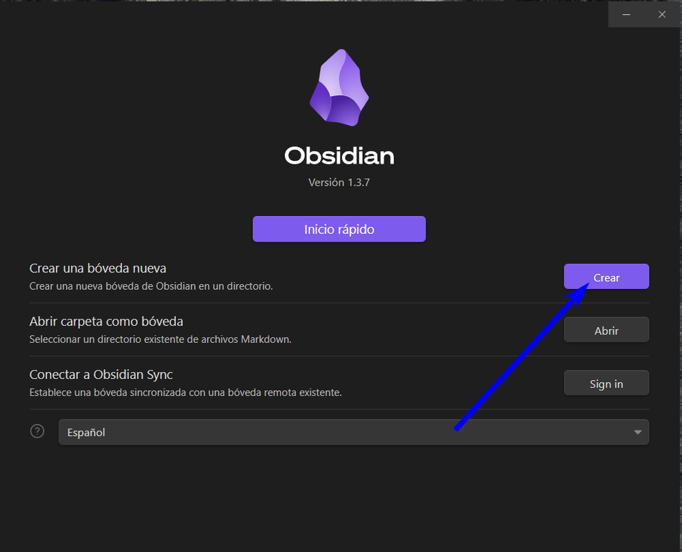
Asignamos un nombre a la bóveda.
Pulsamos en "Navegar" y elegimos dónde se guardará la misma. Se recomienda en la raiz de sistema "Disco local (C:)".
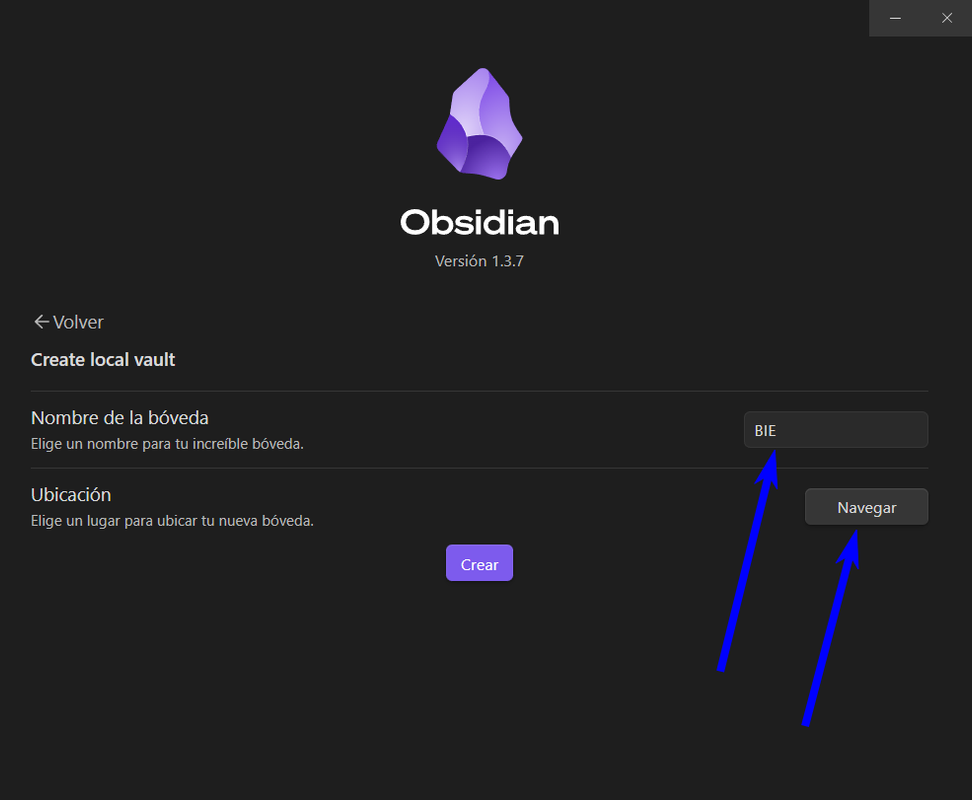
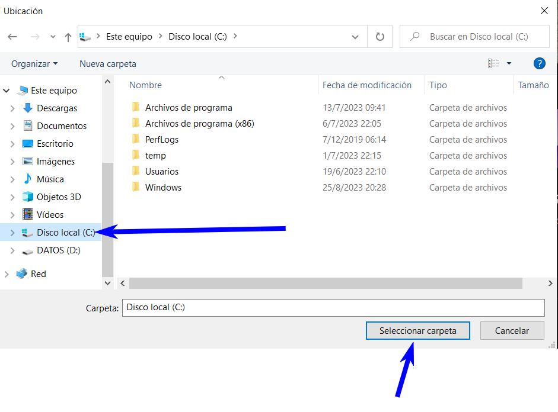
Pulsamos en "Crear" y ya tenemos a Obsidian listo para ser usado!!!
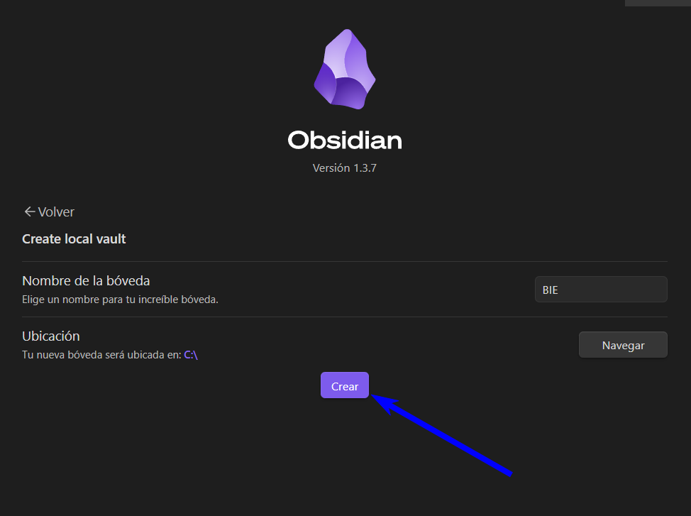
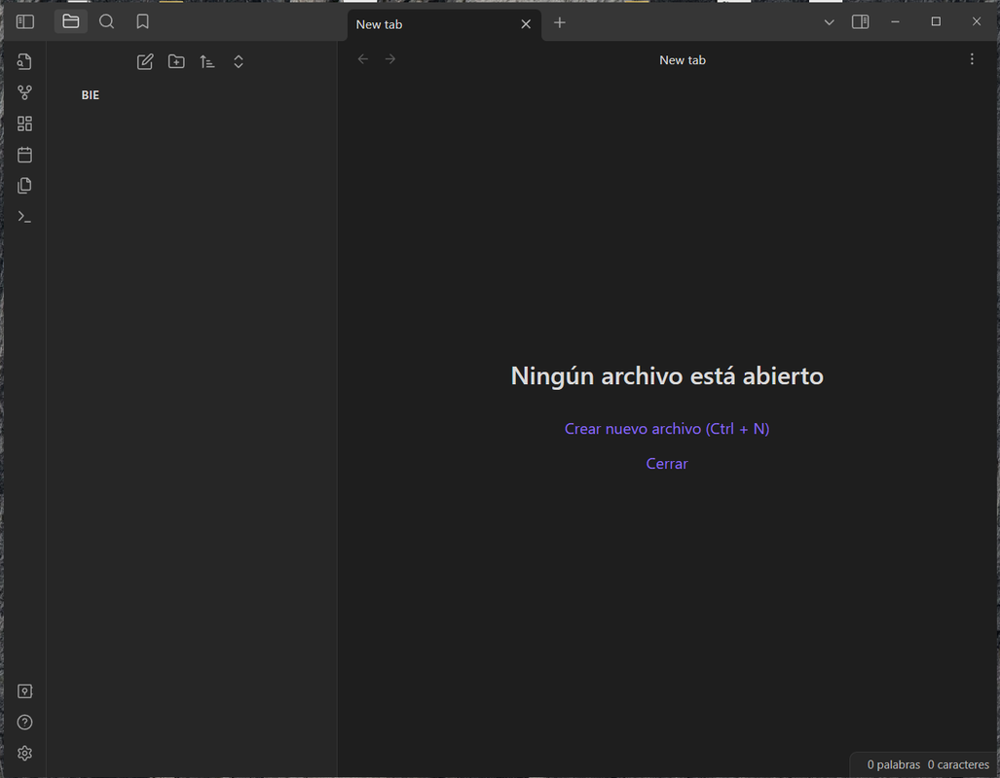